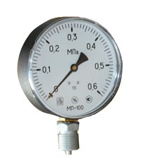

Манометры
Мы поставляем широкий спектр манометров для измерения давления воды, пара, газа, аммиака, фреона и других сред.
Манометры поставляются в корпусах из черной и нержавеющей стали диаметром от 50 до 160 мм, с полимерным или техническим стеклом. Класс точности общетехнических манометров обычно 1,5 или 2,5. Присоединительная резьба - М20х1,5.
Пример заказа манометра:
Манометр показывающий (МП) с диаметром корпуса 50 мм (50), из полистирола (П), полимерным стеклом, радиальным расположением штуцера, максимальным давлением 1,0МПа (1,0МПа): Манометр МП50П-1,0МПа
Манометры общетехнические показывающие МП:
- Диаметр корпуса, мм: 50, 63, 100, 160
- Класс точности: 1,5; 2,5
- Пределы измерений, МПа: -0,1...0...40,0
- Материал корпуса: сталь
- Стекло: полимерное или техническое
- Материал механизма: латунь
- Присоединительная резьба: М12х1,5; М20х1,5; G1/2
Манометры эталонные МП:
- Диаметр корпуса, мм: 160, 250
- Класс точности: 0,25; 0,4
- Пределы измерений, МПа: -0,1...0...60,0
- Материал корпуса: сталь нержавеющая, сталь черная
- Стекло: техническое
- Материал механизма: медный сплав
- Присоединительная резьба: М12х1,5; М20х1,5; G1/2
Напоромеры, тягомеры, тягонапоромеры НП, ТП, ТНП:
- Диаметр корпуса, мм: 63, 100, 160
- Класс точности: 1,0; 1,5; 2,5
- Пределы измерений, кПа: -100...0...100
- Материал корпуса: сталь нержавеющая, сталь черная
- Стекло: техническое, полимерное
- Материал механизма: латунь, сталь нержавеющая
- Присоединительная резьба: М12х1,5; М20х1,5; G1/2
Для заказа манометров звоните по телефону (495) XXX-XX-XX.
Так же мы поставляем трехходовые краны 11Б18бк для присоединения манометров.